VLM-Guided Contact Retargeting and Generative Partner Modeling for Deployable Humanoid–Human Interaction
CoRL 2026
We present REACT — a Reactive Egocentric Agent for Contact-rich Humanoid–Human InTeraction.
Five contact-rich interactions on a real Unitree G1, driven by a single egocentric depth policy using onboard sensing alone. Faces blurred for privacy.
Onboard egocentric sensing
All interactions above run on the real Unitree G1 using onboard sensing alone: a single egocentric depth policy perceives the partner and executes the interaction.
What the robot sees. Left: onboard RGB, shown for context only. Right: the egocentric depth observation the policy consumes.
Long-horizon · hug ×3. A single continuous rollout in which the policy performs three consecutive hugs, demonstrating stable long-horizon contact-rich interaction.
Simulation rollouts / unseen motions
Student-policy rollouts on held-out motion files never seen during training. For each interaction we show the rollout next to the actual egocentric depth stream the policy consumes — no partner state, no external tracking, no privileged information. The motion ID of each held-out file is listed on the right.
Abstract
Humanoid–human interaction requires robots to operate under severe partial observability: during close physical contact, the human partner is frequently occluded, truncated, or outside the robot's field of view, causing human pose-estimation systems to fail and often necessitating external tracking or privileged human state. At the same time, heavy mutual occlusions introduce errors into the human–human motion-capture data used for learning.
We present REACT, a framework for learning deployable humanoid–human interaction policies from human–human demonstrations. REACT treats semantic contact structure as the key supervisory signal connecting demonstration processing, interaction learning, and onboard control. First, a VLM-guided contact modeling and retargeting pipeline identifies semantically meaningful contacts and transfers them onto humanoid–human geometry while preserving interaction structure. Using these annotations, privileged interaction policies learn physically grounded behaviors through interaction-aware contact rewards and are subsequently distilled into deployable egocentric depth policies trained entirely from onboard sensing using photorealistic SMPL-X rendering of dynamic human partners. To address severe partial observability, we additionally introduce generative partner-state modeling objectives that predict partner motion from egocentric observations, encouraging latent interaction-state inference under heavy occlusion.
We evaluate REACT in simulation and on a real Unitree G1 humanoid across diverse contact-rich interactions, including high-fives, hugs, handshakes, pat-on-back, and link-arm behaviors. Semantic contact modeling substantially improves preservation of demonstrated interactions, while generative partner-state modeling significantly improves robustness under occlusion. On real hardware, REACT executes diverse humanoid–human interactions using onboard sensing alone and outperforms a baseline relying on external pose estimation.
A contact-centric approach
Social, assistive interactions are fundamentally characterized by physical contact. REACT makes contact the central abstraction: semantic contact annotations drive both retargeting and reinforcement learning (via a contact reward), so the structure that defines an interaction between two humans is preserved when transferred to a humanoid and learned as a control policy.
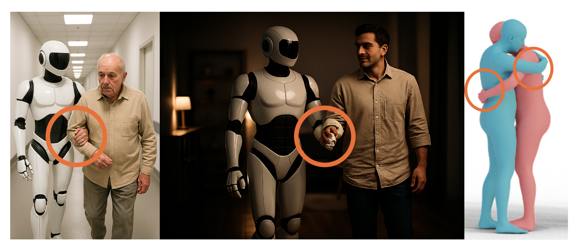
Method
REACT couples three stages around semantic contact — VLM-guided contact annotation, contact-preserving retargeting, and depth-based policy learning with generative partner modeling — ending in zero-shot deployment on a real G1.
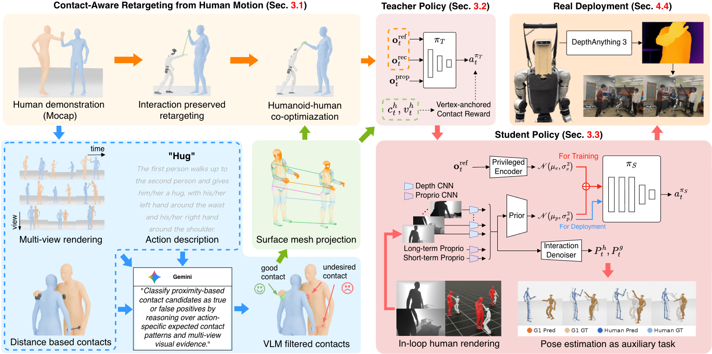
Overview. From contact-aware retargeting of human demonstrations (Sec. 3.1) through teacher–student policy learning (Sec. 3.2–3.3) to real deployment (Sec. 4).
VLM-guided semantic contact annotation
Close-range motion-capture references are noisy: proximity alone produces many spurious contacts. REACT renders each demonstration from multiple views over time and asks a vision–language model to classify distance-based candidates as true or false by reasoning over the action description and multi-view evidence, yielding semantically meaningful contacts.
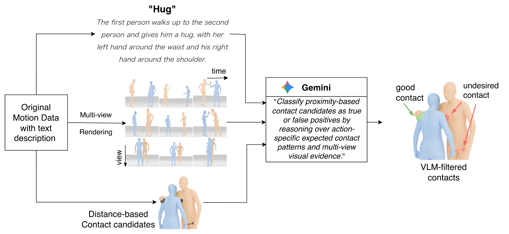
Contact-preserving interaction retargeting
Filtered contact labels are projected from the SMPL-X human surface onto the humanoid–human geometry through a dense mesh mapping. A G1–human co-optimization retargets the demonstration so annotated contacts are reproduced on the robot while global interaction structure is preserved across the embodiment gap.
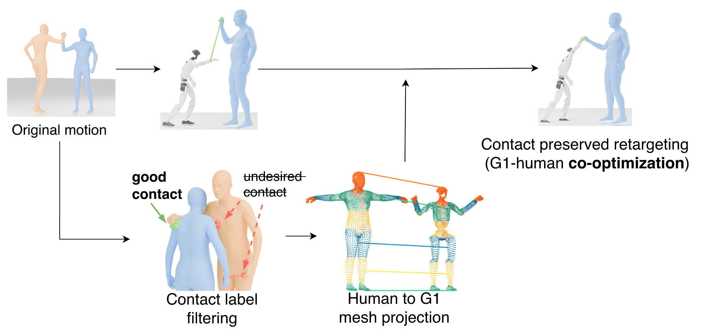
Depth policy & generative partner modeling
A privileged teacher learns physically grounded behaviors with full partner state and a mesh-level contact reward, then is distilled into a deployable student that observes only onboard depth and proprioception. An interaction denoiser predicts past, present, and future partner motion as an auxiliary task, recovering latent state under occlusion. At deployment, onboard depth from DepthAnything 3 drives the same policy zero-shot.
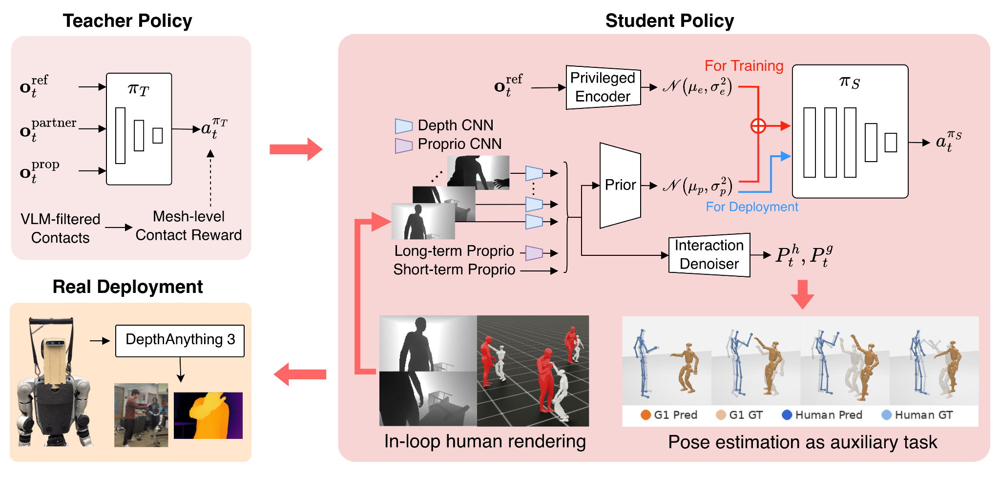
VLM-guided semantic contact annotation
VLM filtering raises precision and F1 over a distance-only baseline (trading a little recall), producing contact labels more correlated with human-annotated ground truth. The VLM keeps semantically valid contacts (green) and removes spurious proximity candidates (red) across categories.
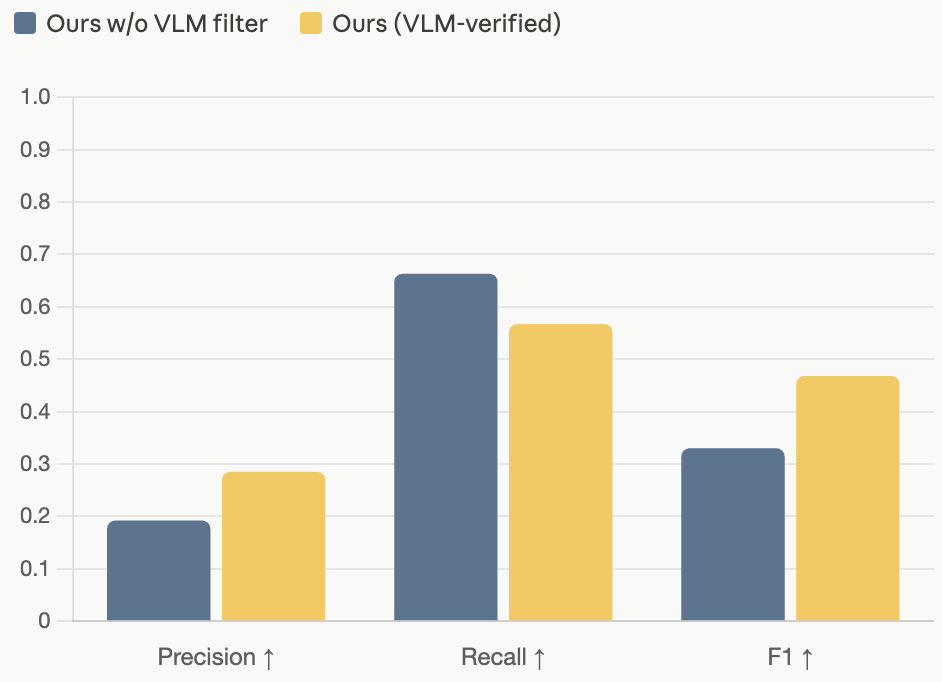
Contact-label quality vs. human GT, with and without VLM filtering.
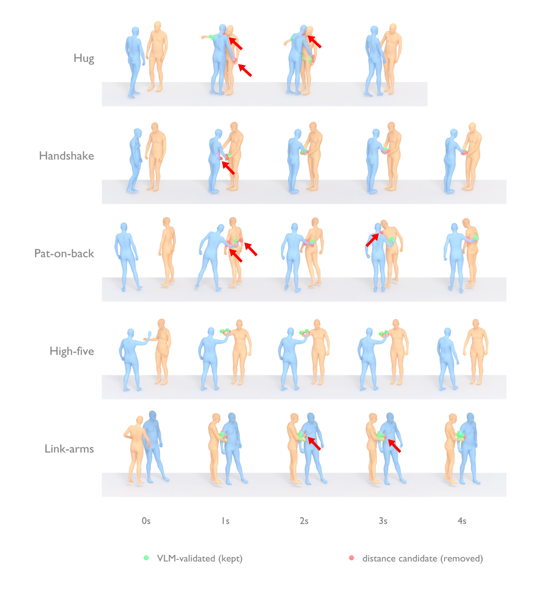
VLM-validated (kept, green) vs. distance candidate (removed, red) over time.
Contact-aware retargeting / qualitative
Compared with OmniRetarget, REACT preserves the interaction's defining contacts on the G1. Each clip shows Original motion · OmniRetarget · Ours.
High-five — Original motion · OmniRetarget · Ours.
Hug — Original motion · OmniRetarget · Ours.
Retargeted interactions across the corpus. Red arrows mark the contacts REACT preserves (Ours column).
Contact-aware retargeting / quantitative
Across a user study and physical-plausibility metrics, REACT attains the best perceived quality and the highest contact precision/recall while keeping jitter and penetration low relative to GMR and OmniRetarget.
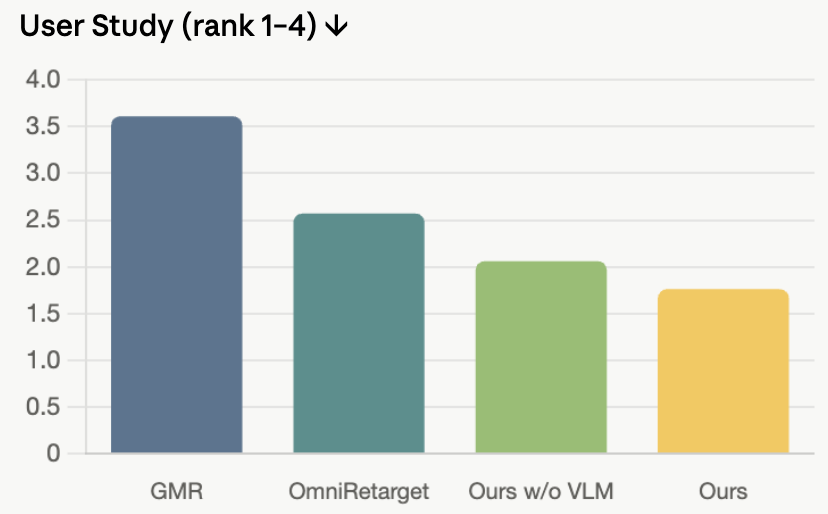
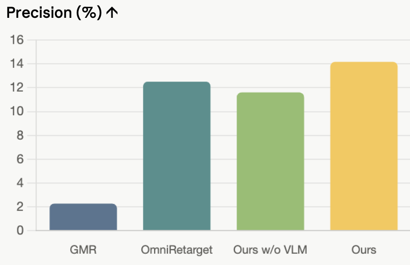
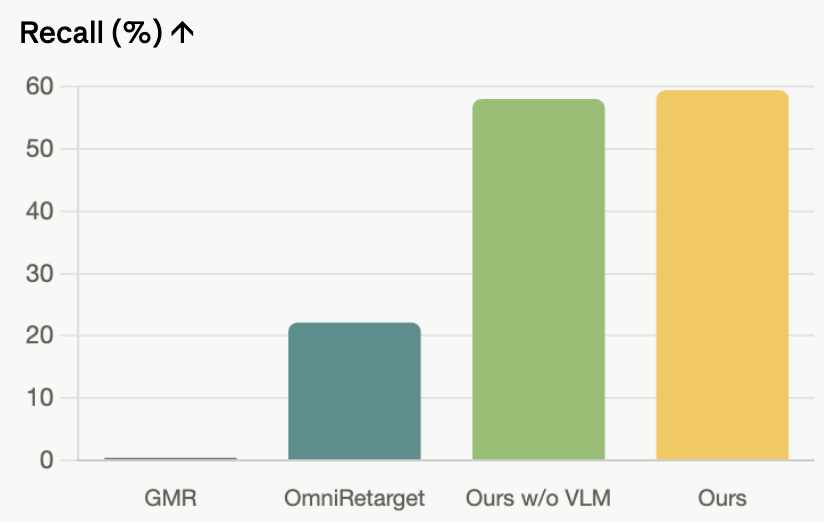
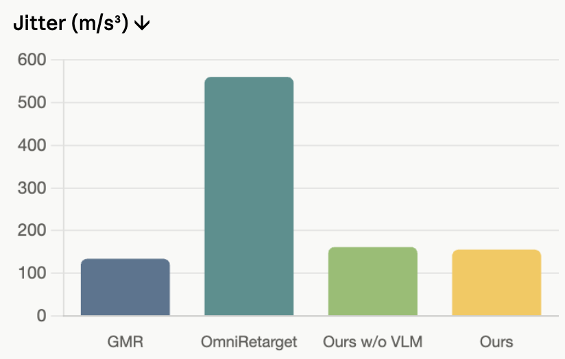
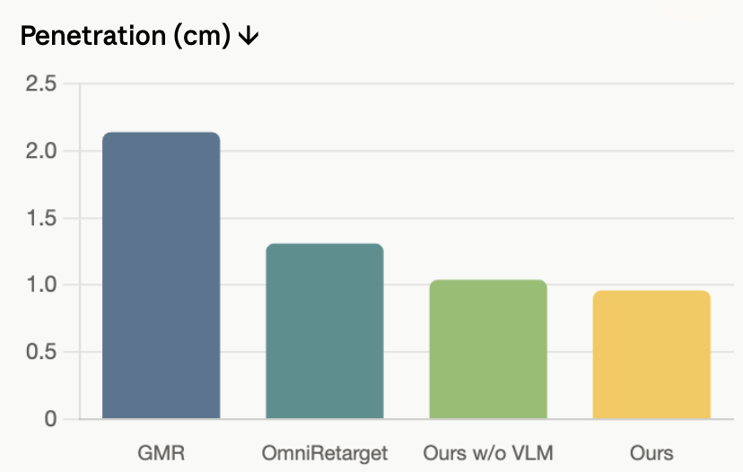
Student policy in simulation
The deployable student policy consumes only onboard depth. During training we render the human partner with photorealistic in-loop SMPL-X depth (left), so the policy learns from realistic human-shaped observations rather than primitive proxies, directly narrowing the sim-to-real gap. From this depth alone it predicts the partner's pose as an auxiliary task (right): green is the estimated current state and purple the predicted future state (darker = longer-term), letting it infer latent interaction state under occlusion.
Generative human partner prediction
From egocentric depth alone, the policy estimates the partner's current pose (green skeleton, overlaid on the ground-truth human mesh in blue) and generates the future human motion (red skeleton) together with the G1's own response (orange robot) at +0.5, +1.0 and +1.5 s. Predictions are overlaid on the actual future of both the human and the G1 (gray ghosts), so the closer red/orange are to gray, the more accurate the forecast.
- GT human (mesh)
- Current pose estimate
- Predicted future human
- Predicted G1
- Actual at t+Δ (ghost)
1 / 5
Robustness under occlusion / vs. external pose
An external RGB-based human pose estimator (HMR2) becomes inaccurate at close range, where the partner is occluded or truncated. REACT's auxiliary pose loss lets the policy recover interaction state from depth and improves contact recall across nearly all actions.
The HMR2 prediction (red) drifts from the true human (sim) at close range while the G1 robot interacts.
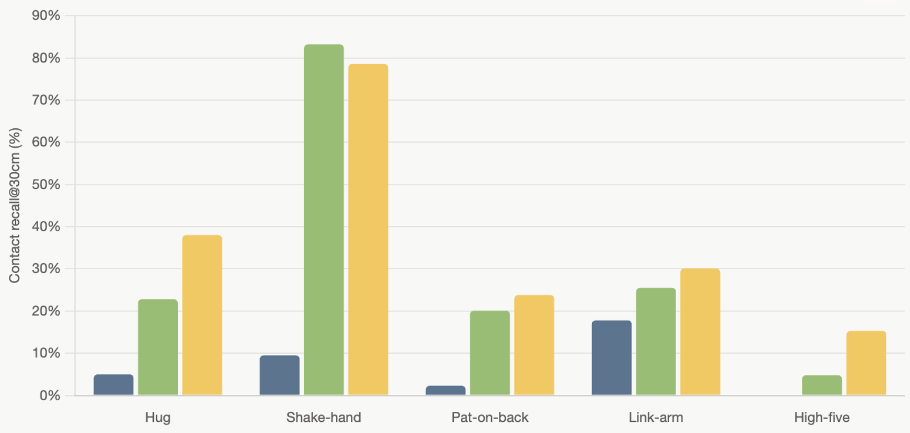
In-sim contact recall@30 cm of the student policy across five actions.
Key contributions
A VLM-guided semantic contact modeling and retargeting framework that transfers human–human demonstrations to humanoid–human interactions while preserving interaction structure across embodiments.
An interaction-learning framework that uses semantic contacts as supervision (contact reward) for physics-based humanoid–human behavior learning.
Generative partner-state prediction objectives that enable latent interaction-state inference under severe partial observability from egocentric depth.
Extensive simulation ablations and real-world deployment on a Unitree G1 across diverse contact-rich humanoid–human interactions, using onboard sensing alone.
BibTeX
@inproceedings{shibata2026react,
title = {{REACT}: Reactive Egocentric Agent for Contact-rich Humanoid-Human Interaction},
author = {Shibata, Yuto and Amaya, Kotaro and Yamazaki, Kashu and Jayanti, Lalit and Aoki, Yoshimitsu and Isogawa, Mariko and Fragkiadaki, Katerina},
booktitle = {Conference on Robot Learning (CoRL)},
year = {2026}
}